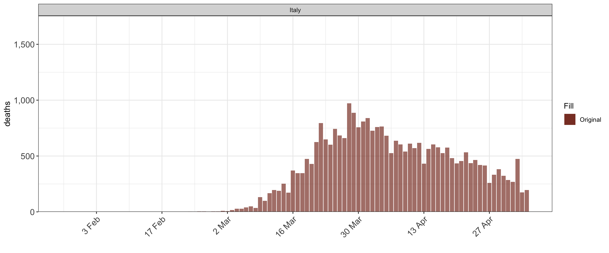

Note: This vignette is a work in progress, and will be regularly updated.
epidemia is an R-package for fitting Bayesian epidemic models in the style of Flaxman et al. (2020). Here we detail these models and give users enough information to start fitting them independently.
The document is organized as follows. Section 1 provides basic examples with minimal description, so that users can quickly get a feel for the package. Section 2 gives a formal framework for the models within the scope of the package. Understanding this framework is essential for making the most of the flexibility offered by epidemia. Section 3 discusses the details of epim; the primary model fitting function in the package. epim is designed to be flexible, and therefore has a number of arguments. This can be intimidating, so we describe these arguments in a lot of detail. Finally Section 4 highlights some of the more useful features of the package.
epidemia contains an example dataset EuropeCovid, which contains data on the daily deaths from Covid-19 recorded in 11 European countries. This will be used as a running example throughout the vignette.
library(epidemia) library(rstanarm) data("EuropeCovid") options(mc.cores = parallel::detectCores())
The line options(mc.cores = parallel::detectCores()) is important if MCMC sampling is used, as it allows different chains to be run in parallel, rather than sequentially.
1 Example Usage
Here we provide code snippets showing basic usage of epidemia. Below considers fitting a model to the Italian data, and demonstrates usage of various arguments to epim.
## [1] "data" "obs" "pops" "si"# use NUTs sampler to fit the model args$algorithm <- "sampling" args$sampling_args <- list(iter=1e3,control=list(adapt_delta=0.95,max_treedepth=15),seed=12345) # model for the reproduction number args$rt <- epirt( formula = R(country,date) ~ 1 + lockdown, prior = normal(location=0,scale=.5), prior_intercept = normal(location=0,scale=2) ) args$group_subset <- c("Italy") fit <- do.call(epim, args)
plot_rt(fit)

plot_obs(fit, type = "deaths")

epidemia can model the evolution of an epidemic in multiple populations using hierarchical models. Here is an example where the parameterization of the time-varying reproduction number includes a country-specific intercept. This could also be extended to group specific slopes; for example by using (1 + lockdown | country) in place of (1 | country) below.
# consider two countries args$group_subset <- c("Italy", "United_Kingdom") args$rt <- epirt( formula = R(country, date) ~ 0 + (1 | country) + lockdown, prior = normal(location=0,scale=.5), prior_intercept = normal(location=0,scale=2), prior_covariance = decov(scale=0.1) ) fit <- do.call("epim", args)
plot_rt(fit)

plot_obs(fit, type = "deaths")

2 Model Overview
Flaxman et al. (2020) introduced a hierarchical Bayesian approach for epidemic modeling, and applied it to assessing the effect of non-pharmaceutical interventions on the covid-19 pandemic in 11 European countries. epidemia is designed to fit models which are largely extensions of this approach. There are however important differences which will be emphasized as we go along.
The model is first described as it applies to modeling an epidemic within a single population. Extensions to multiple populations are considered in the subsequent section.
2.1 A Single Population
Let \(t_0\) be an integer representing the first date at which the epidemic is modeled, and \(T\) be the number of consecutive days over which to simulate the epidemic.
Observed data (daily deaths, cases etc.) are modeled a function of \(I(t)\), a process representing cumulative infections at time \(t_0 + t\). This is unobserved and evolves according to \[\begin{equation} I'(t) = \left(\frac{S_0-I(t)}{S_0} \right)C_{\lfloor t \rfloor}\tilde{R}_{\lfloor t \rfloor}, \tag{2.1} \end{equation}\] where \(S_0\) is the initial susceptible population at \(t_0\), \(C_t\) is a measure of ‘total infectiousness’ and \(\tilde{R}_t\) is the time-varying basic reproduction number. Note that both \(C_t\) and \(\tilde{R}_t\) are modeled as time discrete.
Infected individuals have an infectiousness score which depends on the date at which they were initially infected, and the generation distribution of the disease. \(C_t\) aggregates this score across all infected people. More on this in Section 2.1.2.
\(R^b_t\) is the expected number of secondary infections arising from a typical infected individual if the entire population is susceptible and if the conditions at time \(t_0 + t\) remained the same over time. This is essentially the basic reproduction number, but allowing for changing conditions which will affect contact rates over time.
The remainder of Section 2 discusses each component of the model in greater depth, starting with the reproduction number. Section 2.1.2 considers the infection model, paying particular attention to initial conditions (seeding), and the simulation of \(I(t)\) at discrete intervals. Finally in Section 2.1.3 the observed data is modeled as a function of these latent infections.
2.1.1 Time-Varying Reproduction Number
Recall that \(\tilde{R}_t\) is akin to a time-varying basic reproduction number. It differs from the time-varying effective reproduction number \(R_t\) in that it assumes the entire population to be susceptible. These two quantities are related by \[\begin{equation} R_t := \left(\frac{S_0-I(t)}{S_0} \right) \tilde{R}_t. \end{equation}\]
We model \(\tilde{R}_t\) as \[\begin{equation} R_t = 2R' \text{logit}^{-1}\left(\eta_t\right), \tag{2.2} \end{equation}\] where \(R'\) is a constant and \(\eta_t\) is a linear predictor. When \(\eta_0 = 0\), the constant \(R'\) has the special interpretation of being the initial reproduction number. In general however, \(\eta_t\) will contain an intercept so that \(\tilde{R}_0\) can be treated as unknown. Note that (2.2) implies that \(\tilde{R}_t\) cannot be greater than \(2R'\). Therefore \(R'\) must be chosen carefully to ensure a plausible upper-bound for the series.
In the most general case \(\eta_t\) can include pooled coefficients, group specific effects, and autocorrelation terms. This generality is most useful when extended to modeling the epidemic in multiple populations (Section 2.2). \(\eta_t\) can be decomposed as \[\begin{equation} \eta_t = X'_t\beta + Z'_t b + Q'_t\gamma_t \tag{2.3} \end{equation}\] where
- \(X_t\) is a \(p\)-dimensional set of regressors for pooled coefficients \(\beta\),
- \(Z_t\) is a \(q\)-dimensional vector for group-specific effects \(b\), and
- \(Q_t\) is a \(v\)-dimensional binary vector specifying a subset of the autocorrelation processes \(\gamma_t\) to include for that period.
The parameters \(\beta\) are assigned a prior distribution. This is flexible, and leverages the framework offered by rstanarm. Multiple different prior families are available. The group specific parameters \(b\) are treated as zero-mean multivariate normal. Prior specifications are described in more detail in Section 3.1.1.4.
\(\gamma_t\) is a vector giving the value of each of the \(v\) autocorrelation processes for period \(t\). At the moment, epidemia only supports random walk processes, however this may be extended in future versions. Each walk is assumed to be independent. \(\gamma_t\) can be written as \[ \gamma_t = (\gamma^{(1)}_{t'_1(t)}, \ldots, \gamma^{(v)}_{t'_v(t)}), \] where each \(\gamma^{(k)}_{t}\) is an independent random walk whose increments may occur at different time indices. That is to say that each \(t'_k\) may transform the time index. This is useful, for example, for modeling a weekly random walk, in which case \(t'_k(t)\) would give the week corresponding to date \(t_0+t\). The individual walks each satisfy \[\begin{equation} \gamma_{t'}^{(k)} = \gamma_{t'-1}^{(k)} + \epsilon^{(k)}_{t'}, \end{equation}\] where \(\epsilon^{(k)}_{t'} \sim N(0, \sigma_k^2)\). Each \(\sigma_k\) is given an independent half normal prior, such that \(\sigma_k = |X|\) where \(X \sim N(0, \sigma^0_k)\) for a given hyperparameter \(\sigma^0_k > 0\).
Recall that \(\tilde{R}_t\) is latent. The quantities we do observe are linked to it through its effect on the underlying infections in the population, which we now describe.
2.1.2 Infections
The evolution of infected individuals over time is modeled using a discrete renewal process. New infections today are taken to be a function of previous infections, a generation distribution, and the series \(\tilde{R}_t\) described above. This is summarized by (2.1).
We are only interested in the cumulative infections at discrete intervals. In particular, we simulate the series \(I_t := I(t)\), for \(t=0,\ldots,T\). Our model assumes that \(t_0\) is the first day at which infections occur, and so we define \(I_{-1}=0\). For the remainder of this article \(\Delta I_t := I_t - I_{t-1}\) refers to the number of new infections at a given period.
Before evolving infections according to (2.1), we need to specify initial conditions. This is done through seeding infections for the first \(n_0 > 0\) days of the epidemic through letting \[ \Delta I_t \sim \text{Exponential}(\tau^{-1}), \] for all \(0\leq t<n_0\). The parameter \(\tau\) is given an exponential prior with a rate hyperparameter \(\lambda_0>0\). This allows the number of infections in the first \(n_0\) days to be learnt by the model.
Infections after the seeding period evolve according to (2.1). However this quantity remains ill-defined, as we have yet to define \(C_t\), the total infectiousness at period \(t_0+t\). This is a function of both previous infections and the generation distribution of the disease. This generation distribution is typically unknown. Therefore, as in Flaxman et al. (2020), we assume that it is the same as the serial interval; represented by a distribution \(s := (s_1,s_2,\ldots)\) over the time from disease onset to a secondary onset. \(C_t\) is then given by the discrete convolution \[ C_t := \sum_{i=0}^{t}\Delta I_i s_{t-i}. \]
Implicit in (2.1) is the assumption that no reinfection can occur, so that infected individuals are permanently removed from the susceptible population. This assumption may be relaxed in future versions of epidemia.
Consider (2.1) restricted to the period \([0, 1]\). Since both \(t \to R_{\lfloor t\rfloor}\) and \(t \to C_{\lfloor t\rfloor}\) are constant over this period, (2.1) reduces to an easily solvable first-order linear ODE with constant coefficients. Generalizing this argument to other time periods shows that given \(I_{t-1}\), \[\begin{equation} \Delta I_t = (S_0 - I_{t-1})\left( 1 -\exp\left(-\frac{R_tC_t}{S_0}\right)\right), \tag{2.4} \end{equation}\] for all \(t \geq n_0\). This satisfies intuitive properties. If \(R_t = 0\) or if nobody is susceptible, there are no new infections. Fixing \(C_t > 0\) and letting \(R_t \to \infty\) implies that \(I_t \to S_0\), i.e. everyone that is susceptible is infected today.
The reader may notice that (2.4) differs from the update used in Flaxman et al. (2020). This new update has the advantage of ensuring that cumulative infections never exceed the total population size.
2.1.3 Observations
Data is observed from \(L\) series \(Y_t^{(1)}, \ldots, Y_{t}^{(L)}\) with the subscript \(t\) ranging between \(1\) and \(T\). These series do not need to be fully observed; i.e. data may be missing for a subset of time periods. The typical example of such data would be daily death (as used in Flaxman et al. (2020)) or case incidence data. However, you are not limited to this. In general,
- \(Y_t^{(l)}\) should represent the count of a particular ‘event’ at time \(t_0 + t\),
- this event occurs at most once per member of the population; an example would be hospitalization data,
- each series should be roughly conditionally independent given the underlying infection process.
Extensions to more general types of data may be considered in future versions of the package. Each \(Y_t^{l}\) is assumed to follow \[\begin{equation} Y_t^{(l)} \sim \mathcal{F}^{(l)}(y_{t}^{(l)}, \phi_l), \end{equation}\] where \(\mathcal{F}^{(l)}\) represents a parametric family with mean \(y_{t}^{(l)}\) and auxiliary parameter \(\phi_l\). epidemia currently supports poisson and negative binomial families. The poisson distribution has no auxiliary parameter, while for negative binomial \(\phi_l\) represents the reciprocal dispersion.
The expected values \(y_t^{(l)}\) are modeled as \[\begin{equation} y_{t}^{(l)} := \alpha^{(l)}_t \sum_{i=0}^{t-1} \Delta I_{i}\pi^{(l)}_{t-i}. \tag{2.5} \end{equation}\] This is a function of previous infections and a discrete distribution \(\pi^{(l)} = (\pi^{(l)}_1, \pi^{(l)}_2, \ldots)\) on \(\mathbb{Z}^+\) representing the time distribution from infection to observation, conditional on an observation occuring. This is then weighted by a factor \(\alpha_t^{(l)}\) which represents the probability that any event occuring at time \(t_0 + t\) is actually recorded as an observation.
To give intuition on the above quantities, suppose for now that the \(l\)th observation process recorded daily death counts. Then \(\pi^{(l)}_{t}\) is the probability, conditional on a death being recorded today, that this individual was infected exactly \({t}\) days prior. \(\alpha^{(l)}_t\) is then the time-varying infection fatality ratio (IFR) for the given population.
Of course \(\alpha^{(l)}_t\) may vary over the course of an epidemic. For example, the infection fatality ratio may change over time as a result of improved treatments. Alternatively for case counts this is the infection ascertainment rate, which may improve over time as a result of increased testing capacity and track and trace systems. To allow for this \(\alpha^{(l)}_t\) takes the form \[\begin{equation} \alpha^{(l)}_t = f^{(l)} \left(o^{(l)} + X^{(l)'}_t \beta^{(l)}\right), \end{equation}\] where \(f\) is a link function, \(o^{(l)}\) is a set of known offsets, and \(X^{(l)}\) is a \(p_l\)-dimensional set of regressors for \(\beta^{(l)}\).
Although not as flexible as (2.3), this is powerful enough to model the aforementioned effects. The user can choose the parameterisation, and the priors on \(\beta^{(l)}\). Future versions of epidemia may extend this to allow for partial pooling.
The distribution \(\pi^{(l)}\) in (2.5) is treated as known, however in the future we may allow it to be parameterized by unknown quantities. One possibility in this direction would be to view \(\pi^{(l)}\) as a discretization of a continuous parametric distribution. The parameters could be given priors to represent our uncertainty over the interval. The Gamma distribution may be a suitable candidate for this.
2.2 Multiple Populations
Previously we described models for an epidemic occuring in a single homogenous population. Here we describe how to adapt this model for simultaneously modeling multiple separate populations. These populations could represent different age cohorts, different states within a country, or even different countries.
Suppose now that there are \(M\) non-overlapping populations with differing start dates \(t^{(m)}_0\) and epidemic lengths \(T_m\). As before, start by considering the model for the time-varying reproduction number. Fix \(t\) and now let \[ \tilde{R}_t := (\tilde{R}_{t,1}, \ldots \tilde{R}_{t,M}), \] where \(\tilde{R}_{t,m}\) is the unadjusted reproduction number at time \(t\) for population \(m\).
\(\tilde{R}_t\) follows the same form as in (2.2) with \(\eta_t\) now being
\[\begin{equation}
\eta_t = X_t\beta + Z_t b + Q_t\gamma_t,
\tag{2.6}
\end{equation}\]
where \(X_t\), \(Z_t\) and \(Q_t\) are \(M \times p\), \(M \times q\) and \(M \times v\) model matrices for the pooled coefficients, group specific effects and autocorrelation terms respectively.
The parameterization implied by (2.6) is very flexible. The user can choose which parameters to pool and which to retain as group-level effects. Moreover, multiple random walks can be specified and shared between populations, or according to some other grouping variable like region, or even by grouping different time periods.
The model for the infection processes within populations remains largely the same. In future versions of the package, we will extend this to allow for importations between groups. The parameter \(\tau\) controlling initial infections is pooled between all populations.
The observation model remains the same, with the parameters \(\beta^{(l)}\) shared between all groups. The auxiliary parameters \(\phi_l\) are pooled and the infection to observations distributions \(\pi^{(l)}\) are assumed the same for each population.
3 R Implementation
epidemia is designed to fit the models described in Section 2. In particular, it uses R’s formula interface to parameterize the time-varying reproduction number in terms of a number of covariates (see (2.6)). The implementation of this shares many similarities with the stan_glmer function in rstanarm and the glmer function in lme4.
3.1 Model fitting using epim
As mentioned in the introduction, the primary model fitting function in epidemia is epim. We now describe this function in depth. Section 3.1.1 details the formal arguments to epim, and links them where possible to the mathematical notation used in Section 2.
3.1.1 Function Arguments
Table 3.1 lists the formal arguments to epim.
| Arguments | Description | Class |
|---|---|---|
| rt | A call to epirt, specifying the model (2.6) for the unadjusted time-varying reproduction number. |
epirt |
| data | A data frame containing all data required to fit the model. See glmer for more details. | data.frame |
| obs | A list of calls to epiobs. Each component specifies the model for an observation. |
list |
| pops | Population of each modeled group. The first column represents the group and the second giving the corresponding population. | data.frame |
| si | A vector representing the serial interval of the disease. This should be a simplex vector - i.e. all elements are non-negative and sum to one. The \(n\)th element gives the probability an individual infects another \(n\) days after disease onset. | numeric |
| seed_days | Number of days \(n_0\) for which to seed infections at the start of the epidemic. Defaults to 6L | integer |
| algorithm | The algorithm used to fit the model. Must be one of ‘sampling’, ‘meanfield’ or ‘fullrank’, which correspond to rstan sampling methods. See sampling and vb. |
character |
| group_subset | An optional vector specifying a subset of groups to model. Elements should correspond to the group levels specified through the data argument. |
character |
| prior_tau | Prior on \(\tau\), the parameter controling the variability in the seeded cases. | list |
| prior_PD | Flag whether to sample from the prior distribution. Same as stan_lm. Defaults to FALSE. |
logical |
| sampling_args | An (optional) named list of parameters to pass to the rstan function used for model fitting. See sampling and vb for details of possible arguments. | list |
Most of the arguments listed in Table 3.1 are self-explanatory. However the first three and also the prior arguments require further explanation. We tackle each of these in turn.
3.1.1.1 rt Argument
This specifies the model for the time-varying reproduction number, given by (2.6). This is done via a call to epirt, whose arguments include a formula and arguments to specify the prior distributions for the model.
The LHS of the formula argument must take the form R(group,date). This is just syntactic sugar to make explicit that the model is for the reproduction number for a given population and date. The RHS can include booth pooled and unpooled terms. Autocorrelation terms may also be included. For more details on interpreting different formulas, please see here.
We briefly give an intepretation for specific models in the context of the Europe data. First note that terms in the formula must correspond to column names in data, which are
colnames(EuropeCovid$data)
## [1] "country" "date"
## [3] "schools_universities" "self_isolating_if_ill"
## [5] "public_events" "lockdown"
## [7] "social_distancing_encouraged" "deaths"Suppose for simplicity that the value of all covariates at the start date of each group is zero, so that the intercept can be interpreted as determining the starting reproduction number \(R_0\) of the disease (this is indeed the case for the Europe example). Then
R(country, date) ~ 0 + lockdownThis is a no-intercept model. The effect is to set an exact \(R_0\) which is the same for all countries. This potentially changes at dates for whichlockdownbecome non-zero (i.e. after the intervention come into place). The starting value is precisely \(R'\) defined in (2.2).R(country, date) ~ 1 + lockdownThe intercept is the same for all countries. This implies a common distribution for \(R_0\), which is set by the argumentprior_intercept.R(country, date) ~ (1 | country) + lockdownA country-specific intercept allows the distribution of \(R_0\) to depend on the country. The prior on these is controlled by both the argumentsprior_interceptandprior_covariancetoepirt.
epirt has three different prior arguments: prior, prior_intercept, and prior_covariance. The latter is only used if at least one random effect term has been specified.
3.1.1.2 data argument
The data argument should be a data frame providing all covariates and observations specified by either the reproduction number model, or in any of the observation models. It must contain at least two columns which give the modeled populations and simulation dates. In the Europe example, the columns country and date serve this purpose. The country column must be coercible to class factor, and the levels of this column determine the possible populations to model.
data <- EuropeCovid$data levels(data$country)
## [1] "Austria" "Belgium" "Denmark" "France"
## [5] "Germany" "Italy" "Norway" "Spain"
## [9] "Sweden" "Switzerland" "United_Kingdom"If specified, only the populations given in the group_subset argument to epim are modeled. Otherwise, all levels are used.
The dates column must be coercible to a ‘Date’ vector. Dates must be consecutive for each modeled group, because it is neccessary to simulate the reproduction number at each date of the epidemic. This means that covariates for the reproduction number model may not contain missing values. This is not neccessarily the case for the observation models, where NAs can simply be omitted.
The first date is taken to be the start date \(t^{(m)}_0\) of the epidemic in that population, and the final date is taken to be \(t^{(m)} + T\).
agg <- function(x,f) aggregate(x$date, by=list(x$country), FUN=f) setNames(cbind(agg(data, min), agg(data, max)[,2]), c("country", "start", "date"))
## country start date
## 1 Austria 2020-02-22 2020-05-05
## 2 Belgium 2020-02-18 2020-05-05
## 3 Denmark 2020-02-21 2020-05-05
## 4 France 2020-02-07 2020-05-05
## 5 Germany 2020-02-15 2020-05-05
## 6 Italy 2020-01-27 2020-05-05
## 7 Norway 2020-02-24 2020-05-05
## 8 Spain 2020-02-09 2020-05-05
## 9 Sweden 2020-02-18 2020-05-05
## 10 Switzerland 2020-02-14 2020-05-05
## 11 United_Kingdom 2020-02-13 2020-05-05Following Flaxman et al. (2020), the start dates shown above are thirty days prior to the first date for which more than 10 cumulative deaths were observed in the given country. They are not learnt by the model, rather they are assumed and specified by the user.
3.1.1.3 obs argument
This gives a list of observation models. Each component of the list must be a call to epiobs. As in epirt, this has a formula argument and arguments prior and prior_intercept to specify model priors. There is no prior_covariance argument because random effect terms are not permitted in formula. This may be allowed in future versions of epidemia.
The family argument specifies whether the error model is negative binomial or Poisson. In the former case, prior_aux specifies the prior on the reciprocal dispersion. In the latter, prior_aux is ignored because there is no auxiliary parameter. The function \(f^{(l)}\) introduced in Section 2.1.3 is controlled by link.The i2o argument gives the infection to observation distribution \(\pi^{(l)}\).
The EuropeCovid data contains an example of the obs argument. It uses only one type of observation, death data, and so \(L=1\) in this case.
deaths <- EuropeCovid$obs$deaths
We can inspect the model as follows.
deaths$formula
## deaths(country, date) ~ 1Visualise the distribution of time from disease onset to death.
barplot(deaths$i2o, names.arg=1:101)
 Following Flaxman et al. (2020), this is a discretization of the distribution of \(\text{Gamma}(1.35,3.77) + \text{Gamma}(4.94,3.60)\), where the notation \(\text{Gamma}(\alpha, \theta)\) refers to a Gamma random variable with shape \(\alpha\) and scale \(\theta\).
Following Flaxman et al. (2020), this is a discretization of the distribution of \(\text{Gamma}(1.35,3.77) + \text{Gamma}(4.94,3.60)\), where the notation \(\text{Gamma}(\alpha, \theta)\) refers to a Gamma random variable with shape \(\alpha\) and scale \(\theta\).
3.1.1.4 Prior arguments
Prior distributions ought to be specified for all epirt and epiobs objects. A prior should also be set for the seeding parameter tau in the call to epim.
Please note that the current default priors may not be appropriate, and should not be relied upon. In future versions of the package, we hope to set good default priors.
Consider \(\beta\) in (2.6). The priors for this are set using the prior and prior_intercept argument to epirt. These will only have an effect if the formula specifies covariates and an intercept respectively. These function similarly to the same arguments in stan_lm. To better understan which families are supported please refer to rstanarm’s priors.
There is one caveat: which is that we offer additional priors. Currently there is just one, shifted_gamma, which can only be used for the prior argument. The addition of this prior is motivated by the priors used in Flaxman et al. (2020). This essentially allows for
\[\begin{equation}
\beta_i \sim \text{Gamma}(\alpha,\theta) - \eta,
\end{equation}\]
where \(\alpha\) and \(\theta\) are shape and scale parameters, and \(\eta\) is a shift to allow for priors with support below zero.
Consider a single ‘random-effects’ term in the formula for epirt. A good example would be (1 + lockdown | country). For each group the intercepts and slopes are treated as zero-mean multivariate normal with unknown covariance matrix \(\Sigma\). For our example term, fix one level implied by the factor country, say "Italy". For this group, there are two coefficients - a random intercept for Italy, and a random slope. Therefore \(\Sigma\) has dimension \(2 \times 2\). Coefficients for different groups are treated as independent.
epidemia borrows from rstanarm and uses the decov prior for \(\Sigma\). This decomposes \(\Sigma\) into a variance vector and a correlation matrix. An LKJ prior is used on the correlation matrix, while the variance is decomposed into the product of a simplex vector and the trace of \(\Sigma\). The simplex vector is given a symmetric Dirichlet prior, which the trace is once again decomposed as \(tr(\Sigma) = J \kappa\), where \(J\) is the order of \(\Sigma\). Finally \(\kappa\) is assigned a scale-invariant prior - specifically a Gamma distribution with give shape and scale hyperparameters. For more information on this, please see rstanarm priors and this vignette.
When the left hand side of the formula has only one term (for example (1 | country)), this prior on the covariance simplifies considerably. \(\Sigma\) simply reduces to \(\kappa\), which has a gamma prior.
4 A More Complete Example
Here we demonstrate how to specify different prior distributions in practice, using the Europe data restricted to Germany and the United Kingdom as an example. In particular, we demonstrate the utility of the prior_PD flag for sampling from the prior predictive distribution. This allows you to easily visualise the prior assumptions on the reproduction number. Various methods that can be used on fitted models (epimodel) are demonstrated.
args$group_subset <- c("Germany", "United_Kingdom")
Similar to Flaxman et al. (2020), we specify the following model.
args$rt <- epirt( formula = R(country,date) ~ (1 | country) + schools_universities + self_isolating_if_ill + public_events + lockdown + social_distancing_encouraged, prior = rstanarm::normal(scale = 0.5), prior_intercept = rstanarm::normal(location=0, scale = 0.5) )
This model allows a separate initial reproduction number for each country, and includes 6 different non-pharamceutical interventions (NPIs) to explain the changes to the number over time.
4.1 Prior Specification
Here we focus on specifying the prior argument. This controls the prior distribution of the coefficients in the regression. Any of the rstanarm priors can be used. We have also added a shifted_gamma prior to replicate the prior in Flaxman et al. (2020).
To quickly visualise the effect of the prior distribution we can used the prior_PD flag to epim. If TRUE epim will sample all parameters from their prior distribution. We specify the prior for the intercept as follows.
args$algorithm <- "sampling" args$sampling_args <- list(iter=500,control=list(adapt_delta=0.95,max_treedepth=15)) args$prior_PD <- TRUE fit <- do.call(epim, args) plot_rt(fit, adjusted=F)

And example of using a shifted gamma prior…
args$rt <- epirt( formula = R(country,date) ~ (1 | country) + schools_universities + self_isolating_if_ill + public_events + lockdown + social_distancing_encouraged, prior = shifted_gamma(shape=1/6, scale=1, shift = log(1.05)/6), prior_intercept = rstanarm::normal(location=0, scale = 0.5) ) fit <- do.call(epim, args) plot_rt(fit, adjusted=F)

The above plots give a good indication of the implications of different prior families.
4.2 Methods for epimodels
Fitting the model to the data…
args$prior_PD = FALSE fit <- do.call("epim", args)
Printing the object gives a brief summary of estimated coefficients and standard errors. This is very similar to the print method for stanreg objects.
print(fit, digits = 2)
You can retrieve the prior distributions used easily with the following.
prior_summary(fit)
## Priors for model 'fit'
## ----------
## Regression for R :
## ----
## Intercept
## ~ normal(location = 0, scale = 0.5)
##
## Coefficients
## ~ gamma(shape = [0.167,0.167,0.167,...], scale = [1,1,1,...], shift = [0.00813,0.00813,0.00813,...])
##
## Covariance
## ~ decov(reg. = 1, conc. = 1, shape = 1, scale = 0.5)
## ----
## Regression for deaths :
## ----
## Intercept
## ~ normal(location = 0.01, scale = 0.001)
##
## reciprocal dispersion
## ~ exponential(rate = 1)
## ----
## See help('prior_summary.epimodel') for more detailsOften it will be useful to obtain the MCMC draws for sampled parameters. This can be done using as.matrix, as.array, or as.data.frame. Here is an example of using as.matrix.
draws <- as.matrix(fit) draws[1:5,1:5]
## parameters
## iterations R|(Intercept) R|schools_universities R|self_isolating_if_ill
## [1,] 0.5092952 -0.411224149 -0.43337151
## [2,] 0.4403600 -0.593767924 -0.35688656
## [3,] 0.5179706 -0.313838759 -0.05178866
## [4,] 0.7496354 -0.147739026 -0.32393192
## [5,] 0.7711350 0.007841624 -1.00834615
## parameters
## iterations R|public_events R|social_distancing_encouraged
## [1,] -2.148474 -0.541779316
## [2,] -2.197250 -0.204239094
## [3,] -2.223381 -0.283055680
## [4,] -2.231270 -0.341593938
## [5,] -2.656384 0.008125047References
Flaxman, Seth, Swapnil Mishra, Axel Gandy, H Juliette T Unwin, Thomas A Mellan, Helen Coupland, Charles Whittaker, et al. 2020. “Estimating the effects of non-pharmaceutical interventions on COVID-19 in Europe.” Nature. https://doi.org/10.1038/s41586-020-2405-7.